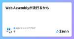
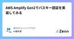
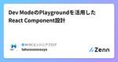

NCDCエンジニアブログのフィード
https://zenn.dev/p/ncdc
NCDC株式会社( https://ncdc.co.jp/ )のエンジニアチームです。 募集中のポジションや、採用している技術スタックの紹介などはこちらをご覧ください！ https://github.com/ncdcdev/recruitment
フィード

Web Assemblyが流行るかも 1
1
NCDCエンジニアブログのフィード
先日、LT大会でWebAssemblyについてお話ししたのでその内容含めて記事を書きました。 調べようと思った背景弊社ではWebデザインのすり合わせにFigmaを使用しているのですが、そんなFigmaはWebAssemblyを使っているから高パフォーマンスを実現しているらしく、気になったので調べてみました。公式ブログを見ると、本当にWebAssemblyのおかげでロード時間が大幅短縮されていることがわかります。https://www.figma.com/ja-jp/blog/webassembly-cut-figmas-load-time-by-3x/ WebAssem...
5日前

AWS Amplify Gen2でパスキー認証を実装してみる
NCDCエンジニアブログのフィード
はじめにAWS公式サンプルのAmazon Cognito Passwordless Authを使ってApmlify Gen2上にパスキー認証を実装してみました。https://github.com/aws-samples/amazon-cognito-passwordless-auth/なお、フロントエンドはRemixのSPAモードにしてみました。(深い意味はなく使ったことないのでお試ししてみた感じです。) Amplify Gen2で作ってみた経緯パスキーは以前から試してみたいなと思っていて調べていたら上記のサンプルを見つけたのですが、載っている構成図がこんな感じなわけ...
8日前

Dev ModeのPlaygroundを活用したReact Component設計 1
NCDCエンジニアブログのフィード
最近、FigmaのDev ModeのPlaygroundを使用する機会があり、こちらが便利だと感じたので紹介させていただきます。 サマリー開発とFigmaデザインの不一致で、保守性が下がることがある。Dev ModeのPlaygroundを使うことで改善できそう。Playgroundとは、FigmaデザインのComponent Propeatyを簡単に試すことができるツールこちらを使用して設計することで、開発の保守性・効率が上がることが期待できる よくある設計方法とその課題以下のようなButtonを設計する際、どのような設計方法があるでしょうか。色が背景または、枠...
9日前

Amplify Gen2ならCDKで自由にカスタムできる。と思っていました。
NCDCエンジニアブログのフィード
結論から言うと、現時点でのAmplify Gen2はコンテナ(というかdockerコマンド)との相性が非常に悪いと思われます。dockerが使えないことで、PythonのLambdaをデプロイするのにも苦戦しました。 Amplify Gen2とはhttps://aws.amazon.com/jp/blogs/news/introducing-amplify-gen2/Amplify Gen2は、フルスタックのTypeScript開発体験を提供するAWS Amplifyの最新バージョンです。従来のAmplifyよりも、開発体験が進化しており、特にバックエンド開発において以下のよ...
1ヶ月前
AWS SNSとFirebase Cloud Messagingを使ってモバイルデバイスにプッシュ通知を送信する
NCDCエンジニアブログのフィード
AWS SNS を使って端末にプッシュ通知を送信してみる。 AWS SNS の簡単な説明https://docs.aws.amazon.com/sns/latest/dg/welcome.htmlドキュメントよりざっくり引用・要約。Amazon Simple Notification Service (Amazon SNS) は、配信者から購読者 へのメッセージ配信を提供するマネージドサービスです。配信者は、トピックにメッセージを送信することで、購読者と非同期的に通信します。クライアントは、Amazon Data Firehose、Amazon SQS、AWS Lamb...
1ヶ月前
【Flutter】fastlaneでGooglePlayの内部テストを配信する
NCDCエンジニアブログのフィード
タイトル通り、fastlane で GooglePlay の内部テストを配信できるようにしていきます。 はじめにfastlane の導入方法等については、この記事では記載しません。fastlane の導入方法等は、こちらの記事も参照してください。https://docs.flutter.dev/deployment/cd#fastlanehttps://zenn.dev/ncdc/articles/fastlane_match#fastlane-match-の導入 全体像使用するフォルダ構成project(root)└─ android └─ fastl...
1ヶ月前
100秒で分かるNextjsの公式チュートリアル
NCDCエンジニアブログのフィード
Nextjsの公式チュートリアルを実践したので、簡単に内容をまとめました。全十六章あります。 第一章 Getting Startedプロジェクトを作成して、appやscriptなどのフォルダ構造の説明があります。サーバーを起動してブラウザで確認して終了です。 第二章 CSS StylingtailwindとCSSモジュールの適用方法について。なお、この章以降はtaiwindを使用していきます。clsxというclassnameを動的に変更するライブラリの紹介もありました。今までは{}でjavascriptのif文でやっていたため、参考にしようと思います。<sp...
1ヶ月前
M2 MacでGiNZAのja-ginza-bert-largeを使ってみた
NCDCエンジニアブログのフィード
はじめに自身のspaCy + GiNZAで構文解析してみるで、ja-ginzaモデルを使用していましたが、解析精度がより高いモデルであるja-ginza-bert-large(β版)を使用してみたいと思い、イントールを試みたところ、インストールに失敗したことがあったため、メモしておきます。 環境構築開発環境は以下になります。MacBook Proチップ：Apple M2メモリ：16GBPythonのバージョンとライブラリ管理には、Ryeを使用しました。Pythonライブラリ管理ツール決定版！Ryeを導入してみたの記事を参考に導入しました。spaCyについては、G...
1ヶ月前
RDSのサブネットグループが変更できない
NCDCエンジニアブログのフィード
起きた問題RDSのサブネットグループを更新しようと思ったら、エラーが出ました。申し訳ありません。DB インスタンス {DB識別子} の変更のリクエストが失敗しました。You cannot move DB instance {DB識別子} to subnet group {移行先のサブネットグループ}. The specified DB subnet group and DB instance are in the same VPC. Choose a DB subnet group in different VPC than the specified DB instanc...
1ヶ月前
知らなかったCognitoの制限
NCDCエンジニアブログのフィード
こんにちは。昨年エンジニアとしてキャリアスタートし、1年ちょっと経ちました。普段はAWSを使ったアプリケーションの開発・保守をやっております。ある日、お客さんから不具合の報告があり、ユーザーの管理に使用しているCognitoの制限が原因だったので、忘備と共有をかねて執筆させていただきます。 書くことAmazon Cognitoとはプロジェクトから知ったCognitoの制限とその対応その他の制限を色々調べるモニタリングしようとしたら... Amazon CognitoとはWebアプリケーションやモバイルアプリケーションに対して、ユーザーのサインアップやサインインのた...
1ヶ月前
およそ1年でAWS認定全冠しました
NCDCエンジニアブログのフィード
こんにちは。昨年の3月ごろからAWS認定に取り組み始め、今年の3月末で12冠を達成したので、勉強法や感想などを書こうと思います。 筆者についてエンジニア歴：APIの開発や運用保守を1年ちょっとしてます。AWS歴：1年くらい。仕事ではECS、RDS、Lambda、S3などを主に触っています。ときどき気になったサービスをコンソール上からポチポチして遊ぶくらい。その他：ITパスポート持ってます。 なんで全冠しようと思ったの？全冠したいなと思ったきっかけは、去年開催されたAWS ANGEL Dojoに参加して、周りのメンバーが認定をどんどん取っていることが刺激になりました。ま...
1ヶ月前
AWS Angel Dojo 2023 に参加しました
NCDCエンジニアブログのフィード
昨年開催された「ANGEL Dojo」に参加したので振り返りたいと思います。（おそい） ANGEL DojoとはANGEL Dojoは、AWS(Amazon Web Service)が主催する若手エンジニア向けのトレーニングイベントになります。ANGEL=APN Next Generation Engineer LeadersANGEL Dojo=ANGEL Dojo for エンドユーザー with AWS パートナーという意味らしいです。内製化に取り組むエンドユーザー企業とAWSパートナー企業が参加しています。参加企業↓https://aws.amazon.com/j...
1ヶ月前
システム監視とAWS
NCDCエンジニアブログのフィード
システム監視ってどうしたら良いのか分からないので勉強したことをまとめます。 書くこと監視ってなに？なにをしたら良いの？監視で利用するAWSサービスCloudWatch, SNS, Health具体的な設定方法までは書きません。別途記事書きたい。 監視とはサーバーやアプリケーション、ネットワーク機器、データベースなどのコンポーネントから情報を計測・収集し、問題が起こった場合にいち早く知ること。 システム監視で行うこと3つ+α ① 監視ツールを導入システムのログやメトリクスを収集する監視ツールを導入する。AWSにおける監視ツールは後述。ログ: いつ...
1ヶ月前
spaCy + GiNZAで構文解析してみる
NCDCエンジニアブログのフィード
はじめにPythonではじめるテキストアナリティクス入門という本を読んで、spaCyとGiNZAで形態素解析や単語間の係り受け解析をやってみて、もう少しいろんなことをやってみたいと思いました。 各ツールの関係spaCyは、Explosion AI社が開発しているオープンソースの自然言語処理ライブラリです。公式サイトのspaCy is designed specifically for production use and ... ということから製品への本格活用を想定して開発されています。また、spaCyは、構文解析のための基本的な機能を持っており、spaCy単体で日本語の形...
1ヶ月前
SageMaker Processing を使ってみる
NCDCエンジニアブログのフィード
はじめにS3から比較的大きなサイズのcsvを読み込み、データ整形後、S3に保存するという処理を自動化させたいと考え、Amazon SageMaker Processingの定期実行をやってみました。 SageMaker Processing についてSageMaker Processingは、Amazonが用意しているコンテナや独自のコンテナ上でPythonコードを実行でき、処理が完了するとインスタンスが自動で停止されるサービスになっています。必要なものは以下です。コンテナイメージ今回は、既に用意されているPyTorchコンテナイメージを使用しました。Pythonバー...
1ヶ月前
AWSの記事を読んで、生成AI活用のセキュリティを考える
NCDCエンジニアブログのフィード
はじめにAWSのこちらの記事を読んで、生成AIのセキュリティについて考えてみた。https://aws.amazon.com/jp/blogs/news/securing-generative-ai-data-compliance-and-privacy-considerations/要約やまとめではなく、読んだ上での私見を雑多に書いていくだけです。ご注意ください。 生成AIの分類セキュリティの観点では、生成AIをざっくり分類するとこんな感じに分類されるとのこと。提供された生成AIサービスを使うステージ1 : パブリックな生成AIサービスChatGPTとかC...
1ヶ月前
【AWS】BedrockのAgentを使ったら1時間弱でRAGを構築できた
NCDCエンジニアブログのフィード
はじめにこんな感じの社内の規約をソースにしたRAGを、Amazon Bedrockで45分程度で構築しました。その後Slackとの繋ぎこみまでしたのですが、こちらは私がSlackでChatbotを作るのが初めてだったこともあり、5時間程度かかってしまいました。この記事では、45分で終わったAmazon Bedrock上でのRAGの構築までを説明します。 作ってみた、きっかけ。RAGを構築すると結構面倒くさい割に運用費用はかかるし、精度もなかなか上がらないなぁと思っていました。そんなとき、AWS Bedrockのナレッジベースとエージェントを使うことで、コンソールをポ...
2ヶ月前
react-konvaのTouchとDragの違い
NCDCエンジニアブログのフィード
react-konvaを触っている時、👨「onDragMove..onTouchMove..onTouchEnd..なんかいっぱいあるけどなんだこれ。」👨「onTouchMoveはデベロッパーツールの開閉で挙動変わるの二重スリットみたい」疑問に思ったので調べてみました。 Touch、Dragの違いonTouchStart, onTouchMove, onTouchEndはPCだと動かないです。onDragStart, onDragMove, onDragEndはPCでもスマホでも動きます。Touchは指で端末をタッチするのに対してDragはマウスでドラッグする意味の違いで...
2ヶ月前
評価指標入門を読んでみた
NCDCエンジニアブログのフィード
はじめに『評価指標入門〜データサイエンスとビジネスをつなぐ架け橋〜』という本を読んでみました。CRISP-DMに沿った推論モデルの開発において、「評価指標の選定」と「開発した推論モデルが必要な精度を達成しているかを判断するための閾値をどう設定すれば良いか」がわからず、困ったことがあったからです。ネットで評価指標について検索すると、評価指標はいろいろ出てくるのですが、例えばRMSEだと「小さければ小さいほど良いです。ただし、どのくらい小さいと良いのかはデータサイエンティストの経験によります。」とか書かれていて、「その経験の部分を知りたいんだけど…」と感じることが多かったです。そ...
2ヶ月前
【Flutter】fastlaneでTestFlightを配信する
NCDCエンジニアブログのフィード
タイトル通り、fastlane で TestFlight を配信できるようにしていきます。 はじめにfastlane の導入方法等については、この記事では記載しません。fastlane の導入方法や、Fastfile 以外の解説については、以下の記事も参照してください。https://zenn.dev/ncdc/articles/fastlane_match#fastlane-match-の導入https://docs.flutter.dev/deployment/cd#fastlane 全体像使用するフォルダ構成project(root)└─ ios ...
2ヶ月前